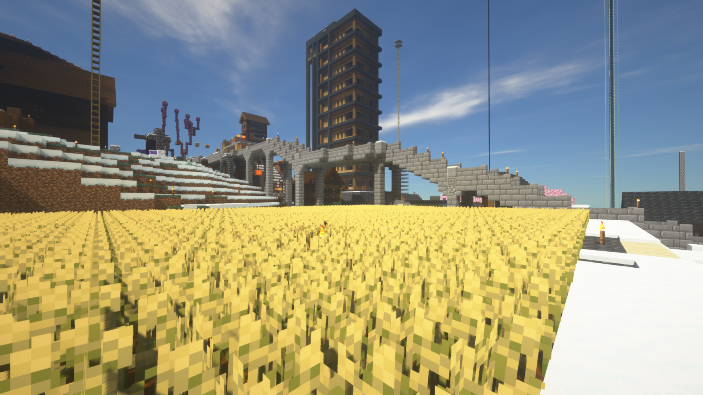

すずめサーバー
すずめが運営する
マインクラフトの生活鯖です！
すずめサーバーとは ?
すずめサーバーとは、すずめとネット上での有志による運営チームが2023年8月頃に発足しました ! プレイヤー同士が協力し、クリエイティブな冒険を共有するためのコミュニティの活発がよく、 サーバー内での協力プレイや建築プロジェクトを楽しんだり、大きめな装置を作ったりとある程度の自由度があります !
参加方法
サーバーアドレス、ホワイトリストの追加やその他サーバーのお知らせはDiscordよりお願いします !

TOP